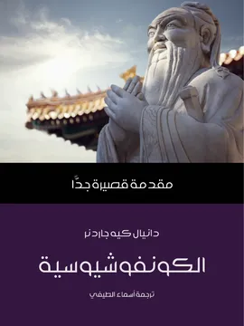

الكونفوشيوسية: مقدمة قصيرة جدًّا

قراءة عربية أصلية محددة النطاق في الصفحات 13 إلى 17 من ملف PDF المرتبط، وليست تلخيصا كاملا للكتاب. نناقش ما تدعمه هذه المقاطع فقط.
كونفوشيوس بين السياسة والتعليم
عاش كونفوشيوس في القرن السادس قبل الميلاد ولو خُيّر لفضّل العيش قبل ذلك بخمسمائة عام في بداية حكم أسرة تشو، الحقبة الذهبية في اعتقاده، بينما صارت الصين في زمنه دويلات متناحرة يحكمها إقطاعيون تخلوا عن القدوة الحسنة. وحين لم يجد حاكمًا يقدّر تعاليمه — كان يمزح وينقد ويستخدم القسوة — حوّل بوصلة حياته إلى تعليم تلاميذه الذين دوّنوا أقواله في كتاب «المختارات»، عشرين كتابًا موجزًا لم يصل إلى شكله الحالي إلا بعد ثلاثة قرون من وفاته. ويتتبع الفصل منافسة «المدارس الفكرية المائة» حتى دعم أسرة هان للكونفوشيوسية فصارت مرموقة في البلاط حتى مطلع القرن العشرين.
زاوية وحدود القراءة
قراءة موجزة من ص ١٣ إلى ص ١٧ من أصل ١٣٦ صفحة، تعرض فصل الكتاب الأول عن كونفوشيوس وإرثه، لا الكتاب كاملًا.
الطبعة والقراءة
صدرت هذه الترجمة عن مؤسسة هنداوي عام ٢٠٢٤. جميع حقوق النشر الخاصة بتصميم هذا الكتاب وتصميم الغلاف والترجمة العربية محفوظة لمؤسسة هنداوي.
تنزيل PDF المجاني ↓ القراءة والمصدر الرسمي ↗